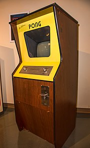
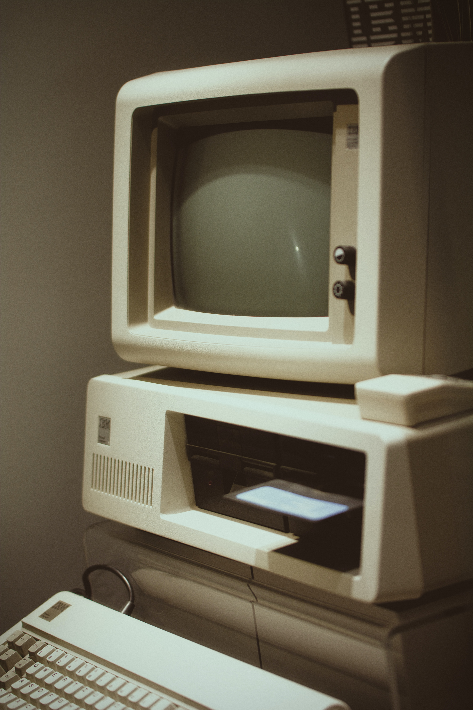

A História Dos Jogos Eletronicos
A história dos jogos digitais teve início quando os acadêmicos começaram a projetar jogos simples, simuladores e programas de inteligência artificial, como parte de suas pesquisas em ciência da computação. Somente a partir das décadas de 1970 e 1980 é que os jogos eletrônicos se tornaram populares, quando jogos de arcade, console de jogos eletrônicos e jogos de computador foram introduzidos ao público em geral. Desde então, os jogos eletrônicos tornaram-se uma forma popular de entretenimento e uma parte da cultura moderna em diversas regiões do mundo.
Primórdios dos jogos digitais (1951-58)

Os jogos foram desenvolvidos para ampliar a mente e desenvolver melhor o cérebro nas atividades escolares, como uma consequência das pesquisas da computação em áreas como a inteligência artificial. A comercialização do UNIVAC I (considerado o primeiro computador comercial da história) em 1951 abriu caminho para a adoção dos computadores por instituições acadêmicas, órgãos de pesquisa e empresas em todo o mundo desenvolvido. Devido ao alto custo, grande consumo de energia e a necessidade de se empregar uma equipe altamente treinada para manter e operar as máquinas, a tecnologia da computação ficou inicialmente limitada às organizações maiores. Por conta disso, a criação dos primeiros jogos eletrônicos limitou-se a testes e demonstrações de teorias relacionadas a áreas como a interação humano-computador, a aprendizagem adaptativa e estratégia militar.
Devido à falta da documentação de muitos desses testes, é difícil de se determinar qual teria sido o primeiro jogo eletrônico criado. Alguns dos primeiros jogos conhecidos incluem Nimrod (1951), uma máquina feita sob encomenda pela Ferranti para o Festival da Grã-Bretanha e na qual se poderia jogar o jogo matemático Nim; OXO (1952), criado por Alexander S. Douglas para o computador EDSAC e que simulava o jogo da velha; e Hutspiel (1955), um jogo de guerra construído pelo exército dos Estados Unidos para simular um conflito com a União Soviética na Europa.
Visão geral
Plataformas O termo "Plataforma" refere-se à combinação específica eletrônica ou de hardware, que, em conjunto com o software, faz com que o videojogo funcione. Um outro termo muito usado é "sistema".
Computador

Em uso comum, jogo de computador ou jogo de PC refere-se a uma forma de mídia que envolve um jogador interagindo com um PC, que é conectado a um monitor de vídeo de baixa, média ou alta resolução. Computadores pessoais não são dispositivos dedicados a jogos, portanto o mesmo jogo pode ter um desempenho diferente dependendo da especificação do hardware. A plataforma tem a vantagem por causa da sua abertura cujos jogos podem ter maior flexibilidade, além da facilidade de modificação dos mesmos.
Console

Diferentes plataformas de consoles (Dreamcast, PlayStation 2, GameCube e Xbox). Ver artigo principal: Console de jogos eletrônicos Um videojogo de console refere-se a um jogo que é jogado um dispositivo eletrônico especializado que pode ser conectado a uma televisão ou um monitor de vídeo composto. Por serem dispositivos dedicados, costumam apresentar hardware padronizado. São os próprios aparelhos de videojogos.
Console portátil

Um console portátil é um dispositivo eletrônico portátil que pode ser segurado com as mãos do usuário, é um aparelho único que já vem com tela, alto-falantes, controle, bateria, podendo ser levados para qualquer lugar pelo jogador. Costumam ter hardware não tão poderoso quanto os consoles e os PCs.
Arcade
Um arcade refere-se geralmente a um jogo que é jogado em um dispositivo eletrônico especializado, que geralmente contém somente um jogo, encontra-se em uma cabine e é operado por fichas ou cartões. Porém, há jogos que podem ser encontrados e mais de uma plataforma. Também conhecidos como fliperamas, são máquinas de de jogos de uso público.
Celulares